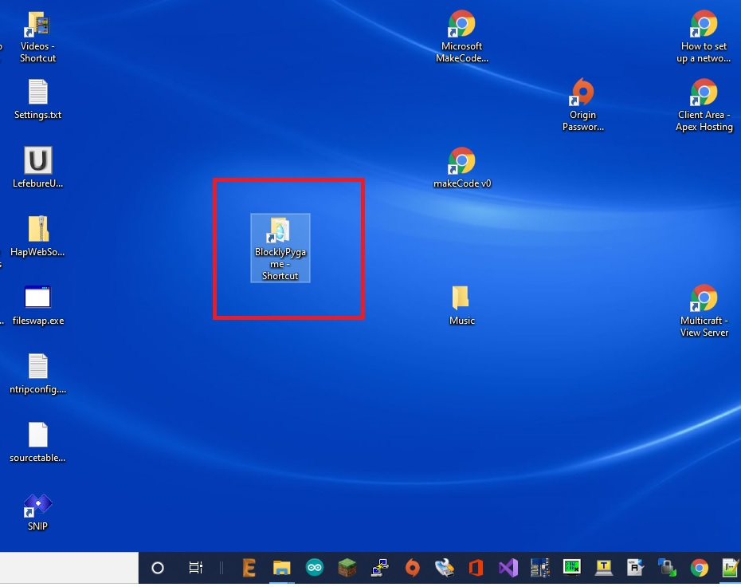

<H1>How to update blockly scriptcraft code</h1>
<h3>&nbsp;&nbsp;Double click on the BlocklyPygame shortcut we placed on the desktop: </h3><br>
<br>
<h3>&nbsp;&nbsp;Enter the command cmd: </h3><br>
<br>
<h3>&nbsp;&nbsp;A black screen will apper<br>
&nbsp;&nbsp;In the black screen, enter the command: git pull --all </h3><br>
<br>
<h3>&nbsp;&nbsp;It should then go to 100%</h3><br>
<hr>

